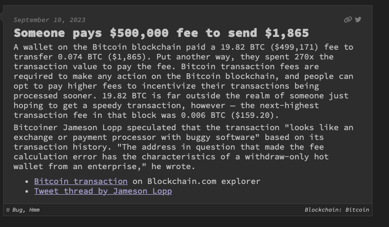
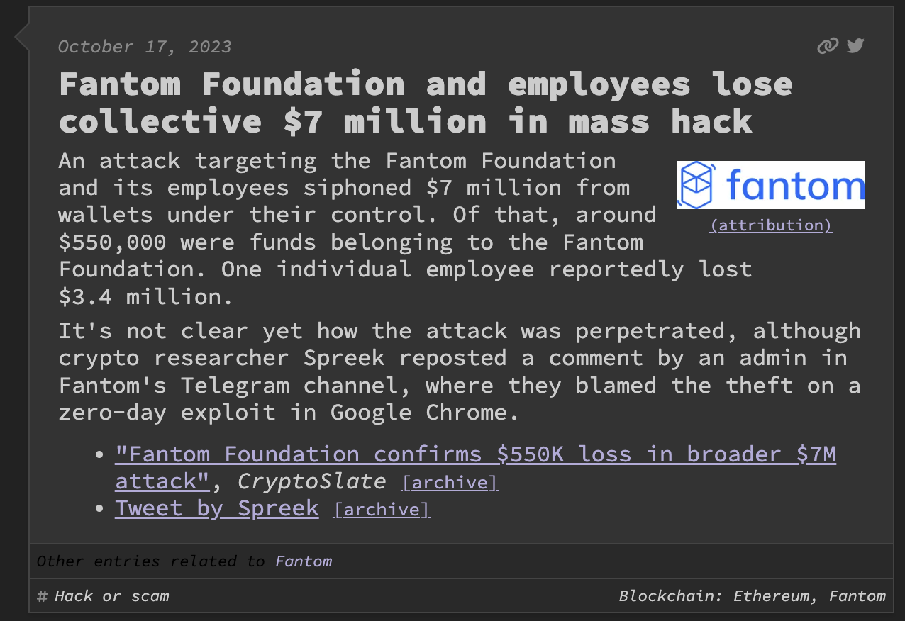

Today's Roadmap
- The problem: Tons of documentation
- OpenAI + Supabase = 7docs
- Bot for the simpleness 🤖
- Automate, automate everything!
- Next steps
- Q&A 🙋🏾♂️
The problem: Tons of documentation
e.g. How does it work useRef?
wellD Book 📚
- I can't find the WHATEVER folder on Google Drive.
- I have a medical appointment. Should I take a day off?
- How can I access the office network from my house?

2024 🌍



OpenAI + Supabase = 7Docs
- Convert knowledge into machine-readable format
- Store the knowledge in a database
- Get an input from the user
- Find the best answer in the database
- Elaborate a fluent answer for the user
Convert knowledge... - Why?
ML algorithms are not capable to process string or images in raw form!
Convert knowledge... - How?
Vectorization or Word Embedding
Terminologies
- Document: single text data point
- Corpus: collection of all the documents present in our dataset
- Feature: Every unique word in the corpus
Bag-of-Words (BoW)
... is a text preprocessing technique that converts a document into a vector of word frequencies, where each dimension represents the occurrence or count of a specific word in the document.
BoW - Processing
Document 1: "The quick brown fox jumps over the lazy dog."
Document 2: "A brown fox is a fast runner."
Document 3: "The dog and the fox are friends."
Tokenization Lowercasing
| |
v v
Document 1 Tokens: Document 1 Tokens:
["the", "quick", "brown", "fox", "jumps", "over", "the", "lazy", "dog"]
Document 2 Tokens: Document 2 Tokens:
["a", "brown", "fox", "is", "a", "fast", "runner"]
Document 3 Tokens: Document 3 Tokens:
["the", "dog", "and", "the", "fox", "are", "friends"]
BoW - Build the Vocabulary
Building Vocabulary
|
v
Vocabulary: ["a", "and", "are", "brown", "dog", "fast", "fox", "friends", "is", "jumps", "lazy", "over", "quick", "runner", "the"]
BoW - Create Vectors
Bag-of-Words Vectors
|
v
Document 1 BoW Vector: [0, 0, 0, 1, 1, 0, 1, 0, 0, 1, 1, 1, 1, 0, 2]
Document 2 BoW Vector: [2, 0, 0, 1, 0, 1, 1, 0, 1, 0, 0, 0, 0, 1, 0]
Document 3 BoW Vector: [0, 1, 1, 1, 1, 0, 1, 1, 0, 0, 0, 0, 0, 0, 2]
BoW - python example
from sklearn.feature_extraction.text import CountVectorizer
# Sample documents
documents = [
"The quick brown fox jumps over the lazy dog.",
"A brown fox is a fast runner.",
"The dog and the fox are friends."
]
# Step 1: Preprocessing and Tokenization
def preprocess(document):
# Remove punctuation and convert to lowercase
document = document.lower()
document = ''.join(char for char in document if char.isalnum() or char.isspace())
return document
preprocessed_documents = [preprocess(document) for document in documents]
# Step 2: Building the Vocabulary
vectorizer = CountVectorizer()
X = vectorizer.fit_transform(preprocessed_documents)
vocabulary = vectorizer.get_feature_names_out()
# Step 3: Create Bag-of-Words Vectors
bow_vectors = X.toarray()
# Display the results
print("Vocabulary:", vocabulary)
for i, doc in enumerate(bow_vectors):
print(f"Document {i+1} BoW Vector:", doc)
Vector Database


pgvector
- PostgreSQL extension for vector similarity search
- Store and query vector embeddings within your database
- Supports L2, cosine similarity, and inner product
pgvector - operators
| Operator | Description |
|---|---|
| <-> | Euclidean distance |
| <#> | negative inner product |
| <=> | cosine distance |
pgvector - example
CREATE EXTENSION vector;
CREATE TABLE items (id bigserial PRIMARY KEY, embedding vector(3));
INSERT INTO items (embedding) VALUES ('[1,2,3]'), ('[4,5,6]');
SELECT * FROM items ORDER BY embedding <-> '[3,1,2]' LIMIT 5;
Supabase
Supabase is an open source Firebase alternative.
Supabase - example
import { useEffect, useState } from "react";
import { createClient } from "@supabase/supabase-js";
const supabase = createClient("https://.supabase.co", "");
function App() {
const [countries, setCountries] = useState([]);
useEffect(() => {
getCountries();
}, []);
async function getCountries() {
const { data } = await supabase.from("countries").select();
setCountries(data);
}
return (
{countries.map((country) => (
- {country.name}
))}
);
}
export default App;
7docs
OpenAI based tool to ingest content into vector database and ready to get queried.
@7-docs/clito ingest content from the command-line@7-docs/edgefor deploying functions to query the content
Bot for the simpleness
Discord.js + Bun
current state of play
We have a bot that can answer to our questions, and a database that contains all the knowledge about our documentation.
Automate, automate everything!
- 7docs docker image
- CI pipeline to keep bot knowledge synced with the documentation
7docs docker image
FROM node:18.18 as node
RUN echo "NODE Version:" && node --version
RUN echo "NPM Version:" && npm --version
FROM python:3.11.4
COPY --from=node . .
RUN mkdir /ci
RUN useradd -d /ci --user-group welld
RUN mkdir -p /ci/node/.npm-global
RUN chown -R welld:welld /ci
ENV NPM_CONFIG_PREFIX=/ci/node/.npm-global
ENV PATH="${PATH}:/ci/node/.npm-global/bin"
WORKDIR /ci
USER welld
RUN npm install --global 7-docs@0.5.1
CI ingest job
7docs:ingest:
stage: ai
retry: 1
image:
name: docker_registry/7docs:0.5.1-node18-v2
entrypoint: [""]
allow_failure: false
cache: {}
needs:
- job: npm:install
optional: true
variables:
NAMESPACE: book-collection
script:
- 7d ingest --files 'docs/**/*.md' --namespace $NAMESPACE
rules:
- if: $7DOCS_DISABLED
when: never
- if: $CI_COMMIT_BRANCH == $CI_DEFAULT_BRANCH
- if: $CI_COMMIT_TAG
Next steps
- Store questions and answers in the DB
- Get the answers from DB
- Collect feedbacks from users